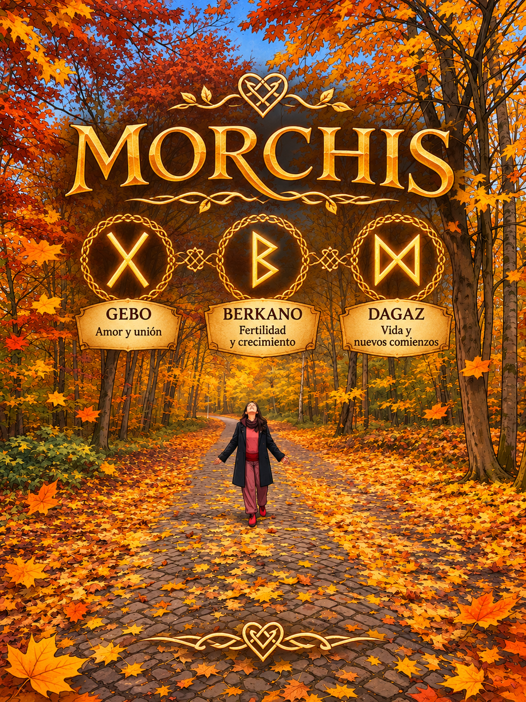

DAGAZ · NUEVOS COMIENZOS
Vida
Un espacio para guardar las palabras que quiero compartir contigo.
El mensaje se guarda en este navegador.
GEBO · AMOR Y UNIÓN
Amor
Una voz, una canción o un recuerdo para escuchar cuando quieras.
Selecciona un archivo de audio desde tu dispositivo.
BERKANO · FERTILIDAD Y CRECIMIENTO
Nuestros recuerdos
Una galería para reunir fotografías de nuestros momentos.
Las fotografías se muestran en este navegador. Para que estén disponibles para todos los visitantes habrá que incorporarlas al repositorio o conectar almacenamiento en línea.